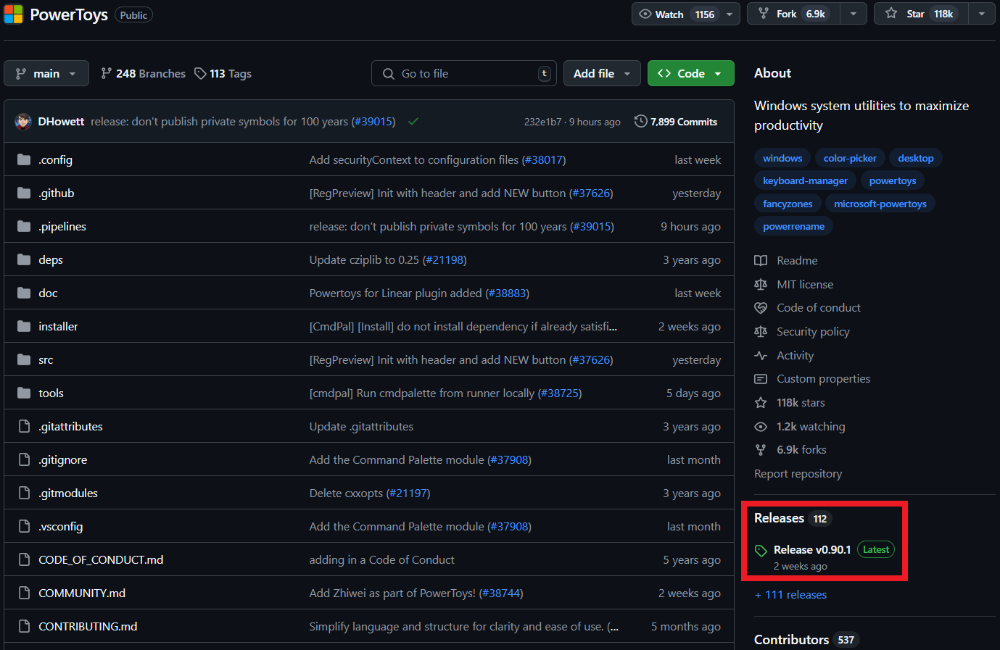
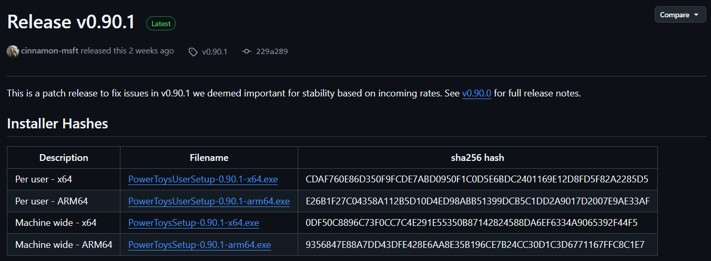
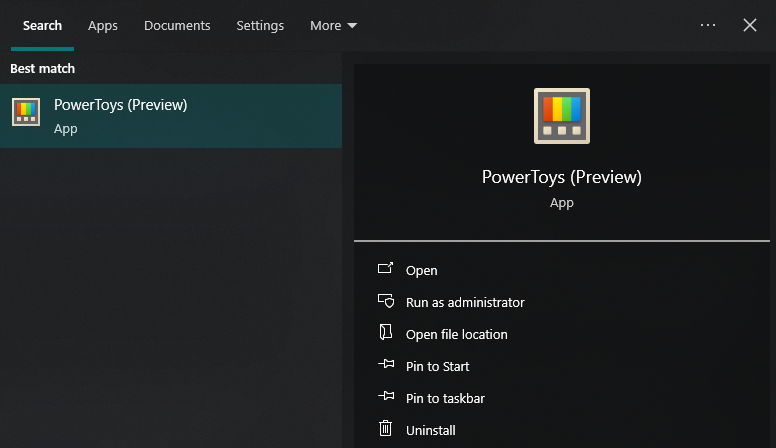
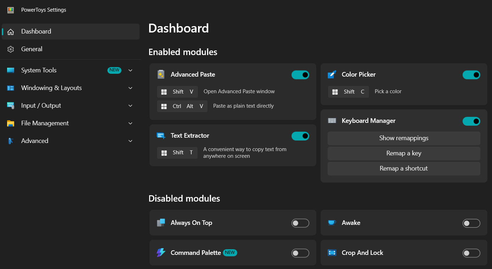
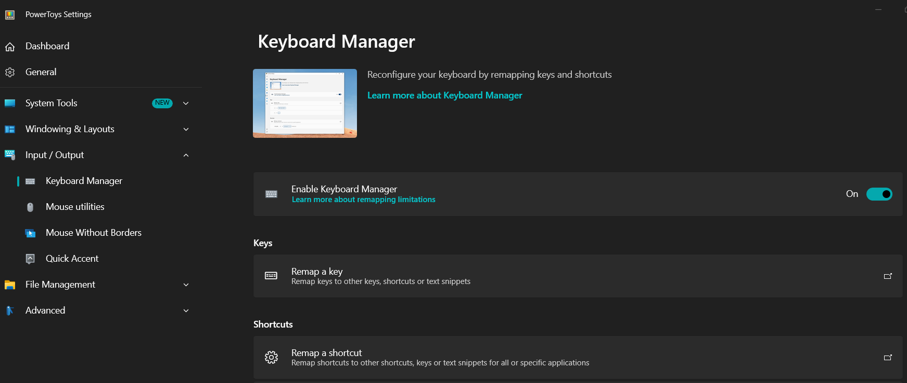
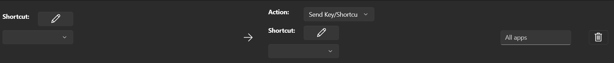
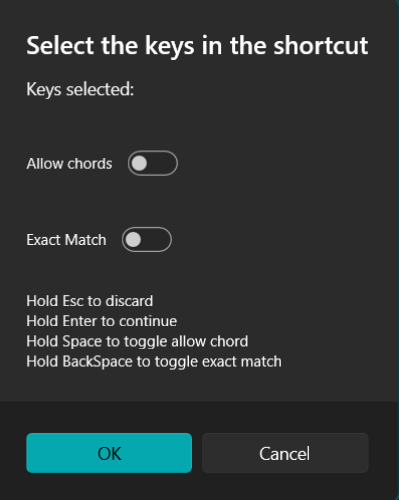
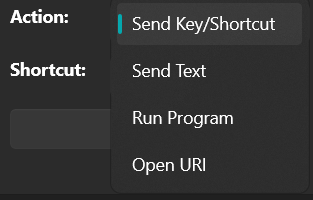

Image credits: Winbuzzer
{kind=link}
[EN] Main tools of MS PowerToys
What the PowerToys are?
PowerToys is a collection of utilities developed by Microsoft for advanced Windows users, designed to improve productivity and personalization of the operating system. Among its tools are FancyZones for efficient window management, PowerRename for batch file renaming, and PowerToys Run, a fast application launcher. Its interface is intuitive, and being open source, it receives constant improvements from the community. Overall, PowerToys offers very useful features that optimize workflow without complicating the user experience.
How to install the PowerToys?
Go to the official Github repo.
Click on the Install PowerToys button and, in the right column, in the “Releases section”, click on the link shown (which corresponds to the latest version available).

The web site that hosts the installers will open, select the appropriate one according to the architecture of our processor (x86 or ARM).

After downloading the installer, run it and follow the instructions (Administrator permissions may be required).
Great. Now, to open it, just search for it through the start menu.

Favorite Tools
PowerToys has a huge catalog of tools and by default it will enable all of them after the first installation. However, it is possible to keep active only those that we are going to use frequently. From this control window we can configure each of the tools (keyboard shortcuts and specific parameters).

PowerToys is a software that includes EXPERIMENTAL tools, so it is always possible that they can be edited, deleted or, if they prove to be well received by users, included in the base versions of Windows.
In the following, I will show the tools I use the most.
Advanced Paste
When we copy text in Windows and paste it into software that allows formatting editing (e.g. Power Point, Word, or when composing an e-mail), it will try to keep the formatting of the original text, which is not always desired. Advanced Paste allows you to paste only the text WITHOUT its original formatting, allowing it to take the target formatting.
Color Picker
Sometimes we want to find out the color of some element of a file (e.g. pdf, figure, Power Point file, etc.) or web site, to use it in a graphic (in R) or in the preparation of a slide show. This tool allows us to extract the color code of any element that we are observing on our screen and returns the corresponding codes.
- Extract colors with Color Picker and use them in R. In this example, we see the basic interface of Color Picker. It is enough to activate it through the keyboard shortcut (by default,
+ Shift + C) and from there to the side of our cursor will appear the color that we are pointing out. If we click on the chosen color, a small window will open showing us the code in HEX format that we can copy and paste directly into our script by prefixing the symbol#(e.g.).
- Extract colors with Color Picker and use them in PowerPoint. The dynamics is basically the same, although in this case an additional functionality is shown: if while we are looking for the color we use the scroll wheel of our mouse, Color Picker will zoom around where our cursor is, allowing us to select the color with greater precision.
If we activate Color Picker by mistake, just press the Esc key to exit its interface.
Keyboard Manager
Keyboard shortcuts help speed up our work, especially when using programs with multiple options available. Keyboard Manager allows you to set custom keyboard shortcuts: simple, but very useful. The shortcut I use the most is the context menu shortcut (i.e. the menu that opens when right-clicking), since my keyboard does not have a dedicated key for this purpose.
To assign a keyboard shortcut:
- Go to the corresponding tab in the PowerToys options, click on “Remap a shortcut”.

- In the interface that will appear, click on “Add shortcut remapping”. A slot will be added where we can indicate the shortcut we want to configure.

- First, click on the pencil icon on the left. A small window will open asking us to press the key combination for the new shortcut.

- Then, we will define the action. It will show us 4 options: Send Key/Shortcut (used to reference a keyboard or mouse action), Send text (so that when the shortcut is pressed, a text we want is typed), Run Program (to run a program or application installed on our PC) and Open URI (to open a URL link).

- In my case, I have defined two keyboard shortcuts: one that allows me to open the context menu (right click) in any environment and another one that allows me to insert the text
%in%(only when I am in RStudio).
Text Extractor
Ah, how many times have we needed to extract text from an image or from a website that doesn’t allow copying text? Well, Text Extractor does just that.
Its use is quite simple, just press the corresponding keyboard shortcut (by default, + Shift + T) and the screen will darken a bit so that with our cursor we can drag a box around the text we want to extract.
Internally, this tool makes use of OCR (Optical Character Recognition, refers to tools for extracting text from an image) and requires the user to have the language pack of the text to be extracted installed. In other words, if I want to extract text in English, Spanish or French, I must first install the OCR packages for these languages.
To install a language pack we will have to:
- Open a PowerShell window in Administrator mode and execute the following command:
Get-WindowsCapability -Online | Where-Object { $_.Name -Like 'Language.OCR*' }This will show us all the available OCR packages. When we have found the one we are interested in, we must remember its code (e.g. fr-FR for French from France, en-US for English from the United States or es-MX for Spanish from Latin America).
- The next step is to execute the following command:
[Windows.Media.Ocr.OcrEngine, Windows.Foundation, ContentType = WindowsRuntime]- Next, run the following command that will show you which packages are already installed on your PC:
[Windows.Media.Ocr.OcrEngine]::AvailableRecognizerLanguages- To install a new OCR package, run the following command, modifying the desired language code:
$Capability = Get-WindowsCapability -Online | Where-Object { $_.Name -Like 'Language.OCR*en-US*' }- Finally, run the following command to start the download and installation of the selected language.
$Capability | Add-WindowsCapability -OnlineDownloading and installing the OCR packages may take several minutes, so please be patient. Also, the installation of each OCR package must be done independently, i.e. one by one.
[ES] Principales herramientas en MS PowerToys
¿Qué son las PowerToys?
PowerToys es una colección de utilidades desarrollada por Microsoft para usuarios avanzados de Windows, diseñada para mejorar la productividad y personalización del sistema operativo. Entre sus herramientas destacan FancyZones para gestionar ventanas de forma eficiente, PowerRename para renombrar archivos en lote, y PowerToys Run, un lanzador rápido de aplicaciones. Su interfaz es intuitiva, y al ser de código abierto, recibe mejoras constantes de la comunidad. En conjunto, PowerToys ofrece funcionalidades muy útiles que optimizan el flujo de trabajo sin complicar la experiencia del usuario.
¿Cómo instalar MS PowerToys?
Ir al sitio web del repositorio de PowerToys en Github.
Presionar el botón Install PowerToys y, en la columna de la derecha, en la sección “Releases”, dar click al link mostrado (que corresponde a la última versión disponible).
Se abrirá el sitio web que aloja los instaladores, seleccionar el adecuado de acuerdo a la arquitectura de nuestro procesador (x86 o ARM).
Luego de descargar el instalador, ejecutarlo y seguir las instrucciones (es posible que se requieran permisos de Administrador).
Genial. Ahora, para abrirlo, bastará con buscarlo a través del menú inicio.
Herramientas favoritas
PowerToys tiene un catálogo enorme de herramientas y por defecto habilitará todas luego de la primera instalación. Sin embargo, es posible mantener activas solo aquellas que vayamos a utilizar frecuentemente. Desde esta venta de control podemos configurar cada una de las herramientas (atajo de teclado y parámetros específicos).
PowerToys es un software que incluye herramientas de tipo EXPERIMENTAL, por lo que siempre es posible que sean editadas, borradas o, si demuestran una alta acogida por parte de los usuarios, incluidas en las versiones base de Windows.
A continuación, mostraré las herramientas que yo más uso.
Advanced Paste
Cuando copiamos un texto en Windows y lo pegamos en algún software que permite la edición de formato (e.g. Power Point, Word, o al redactar un correo electrónico), éste intentará mantener el formato del texto original, lo cual no siempre es lo deseado. Advanced Paste permite pegar únicamente el texto SIN su formato original, permitiendo que pueda tomar el formato de destino.
Color Picker
Muchas veces queremos averiguar el color de algún elemento de algún archivo (e.g. pdf, figura, archivo en Power Point, etc.) o sitio web, para utilizarlo en un gráfico (en R) o en la preparación de una dispositiva. Esta herramienta permite extraer el código de color de cualquier elemento que estemos observando en nuestra pantalla y nos retorna los códigos correspondientes.
- Extraer colores con Color Picker y usarlos en R. En este ejemplo, vemos la interfaz básica de Color Picker. Basta con activarlo a través del atajo de teclado (por defecto,
+ Shift + C) y a partir de ahí al costado de nuestro cursor aparecerá el color que estemos señalando. Si damos click al color elegido, se abrirá una ventana pequeña mostrándonos el código en formato HEX que podemos copiar y pegar directamente en nuestro script anteponiendo el símbolo#(e.g.).
- Extraer colores con Color Picker y usarlos en Power Point. La dinámica es básicamente la misma, aunque en este caso se muestra una funcionalidad adicional: si mientras buscamos el color utilizamos la rueda de scroll de nuestro mouse, Color Picker hará un zoom alrededor de donde está nuestro cursor, permitiéndonos seleccionar el color con mayor precisión.
Si por error activamos Color Picker, basta con presionar la tecla Esc para salir de su interfaz.
Keyboard Manager
Los atajos de teclado ayudan a agilizar nuestro trabajo, sobre todo cuando utilizamos programas con múltiples opciones disponibles. Keyboard Manager permite establecer atajos de teclado personalizados: simple, pero muy útil. El atajo que más utilizo es el de menú contextual (i.e. el menú que se abre cuando presionamos click derecho), ya que mi teclado no tiene una tecla dedicada para este propósito.
Para asignar un atajo de teclado:
- Ir la pestaña correspondiente dentro de las opciones de PowerToys, dar click en “Remap a shortcut”.
- En la interfaz que se mostrará, dar click en “Add shortcut remapping”. Se añadirá un slot en donde podremos indicar el atajo que deseamos configurar.
- Primero, daremos click en el ícono de lápiz a la izquierda. Se abrirá una pequeña ventana en donde nos pedirá que presionemos la combinación de teclas del nuevo atajo.
- Luego, definiremos la acción. Nos mostrará 4 opciones: Send Key/Shortcut (que sirve para referenciar una acción de teclado o mouse), Send text (para que cuando el atajo sea presionado, se escriba un texto que nosotro querramos), Run Program (para ejecutar un programa o aplicación instalada en nuestra PC) y Open URI (para abrir un vínculo URL).
- En mi caso, tengo definidos dos atajos de teclado: uno que me permite abrir el menú contextual (click derecho) en cualquier entorno y otro que me permite insertar el texto
%in%(únicamente cuando estoy en RStudio).
Text Extractor
Ah, ¿cuántas veces hemos necesitado extraer el texto de alguna imagen o de algún sitio web que no permite copiar texto? Bueno, Text Extractor hace justamente eso.
Su uso es bastante sencillo, basta con presionar el atajo de teclado correspondiente (por defecto, + Shift + T) y la pantalla se oscurecerá un poco para que con nuestro cursor arrastremos un recuadro alrededor del texto que deseamos extraer.
Internamente, esta herramienta hace uso de OCR (Reconocimiento Óptico de Caracteres, hace referencia a herramientas de extracción de texto a partir de una imagen) y requiere que el usuario tenga instalado el paquete de idioma del texto que desea extraer. En otras palabras, si deseo extraer texto en inglés, español o francés, debo instalar previamente los paquetes de OCR para estos idiomas.
Para instalar un paquete de idiomas tendremos que:
- Abrir una ventana de PowerShell en modo Administrador y ejecutar el siguiente comando:
Get-WindowsCapability -Online | Where-Object { $_.Name -Like 'Language.OCR*' }Esto nos mostrará todos los paquetes OCR disponibles. Cuando hayamos encontrado el que nos interesa, debemos recordar su código (e.g. fr-FR para francés de Francia, en-US para inglés de Estados Unidos o es-MX para español de Latinoamérica).
- El siguiente paso será ejecutar el siguiente comando:
[Windows.Media.Ocr.OcrEngine, Windows.Foundation, ContentType = WindowsRuntime]- Seguidamente, ejecutar el siguiente comando que nos mostrará qué paquetes ya se encuentran instalados en nuestro PC:
[Windows.Media.Ocr.OcrEngine]::AvailableRecognizerLanguages- Para instalar un paquete OCR nuevo, ejecutaremos el siguiente comando, modificando el código del idioma deseado:
$Capability = Get-WindowsCapability -Online | Where-Object { $_.Name -Like 'Language.OCR*en-US*' }- Finalmente, ejecutaremos el siguiente comando para iniciar la descarga e instalación del idioma seleccionado.
$Capability | Add-WindowsCapability -OnlineLa descarga e instalación de los paquetes OCR puede tomar varios minutos, seamos pacientes. Así mismo, la instalación de cada paquete OCR debe hacerse de forma independiente, i.e. uno por uno.